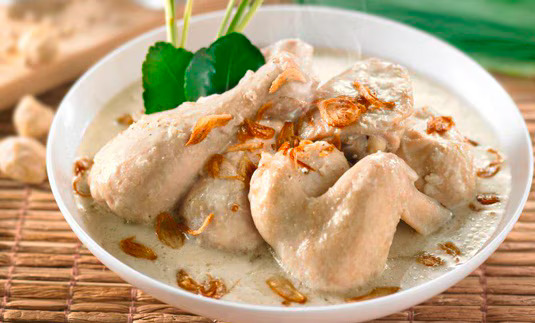
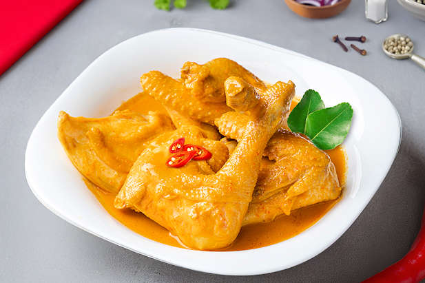
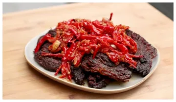
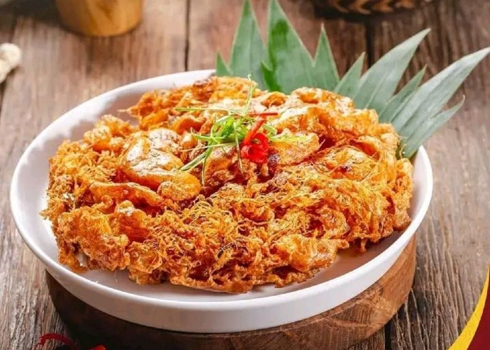

Rendang Sapi
Daging sapi yang dimasak dengan santan dan rempah-rempah khas Minangkabau hingga bumbunya meresap.
Rp20.000$1.25
Selamat datang di Rumah Makan Padang Sederhana. Kami menyajikan berbagai hidangan khas Minangkabau dengan cita rasa lezat dan autentik.
Nikmati beragam pilihan makanan dengan harga terjangkau yang cocok untuk dinikmati bersama keluarga maupun teman.
Lihat MenuRumah Makan Padang Sederhana merupakan tempat makan yang menyajikan berbagai makanan khas Minangkabau. Dengan menggunakan rempah-rempah pilihan dan resep khas, kami berusaha memberikan pengalaman kuliner yang lezat dan autentik kepada setiap pelanggan.
Pilihan makanan dan minuman khas Padang yang siap menemani waktu makan Anda.






Untuk melakukan pemesanan, pelanggan dapat mengikuti langkah-langkah berikut agar proses pemesanan berjalan dengan mudah dan teratur.